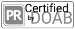

Academia Press (37 books)
Academic Studies Press (68 books)
Accademia University Press (41 books)
African Minds (24 books)
African Studies Centre Leiden (ASCL) (1 books)
Akademie Verlag (1 books)
Alliance Athéna (3 books)
Alpara (37 books)
Amsterdam University Press (430 books)
Anthem Press (10 books)
AntropoWeb (3 books)
ANU Press (574 books)
AOSIS (51 books)
Apress (27 books)
Arc Humanities Press (2 books)
Arco (1 books)
Ariadna Ediciones (62 books)
Artois Presses Université (17 books)
Aschendorff Verlag (5 books)
Athabasca University Press (138 books)
Ausonius Éditions (63 books)
Austrian Academy of Sciences Press (2 books)
Berg Publishers (6 books)
Berghahn Books (37 books)
Birkhäuser - an imprint of De Gruyter (5 books)
Bloomsbury Academic (206 books)
Böhlau (291 books)
Boydell & Brewer (3 books)
Brandeis University Press (4 books)
Brepols (10 books)
Brill (443 books)
Bristol University Press (4 books)
Brookings Institution Press (8 books)
Brown Judaic Studies (20 books)
bu,press (15 books)
Büchner-Verlag (6 books)
C.H.Beck (23 books)
CABI CAB International (1 books)
Cambridge University Press (14 books)
Canadian Institute of Ukrainian Studies Press (1 books)
Cappelen Damm Akademisk/NOASP (Nordic Open Access Scholarly Publishing) (112 books)
Cardiff University Press (3 books)
Carl Grossmann Verlag (16 books)
Carrières Sociales Editions (12 books)
Casa de Velázquez (83 books)
CEDEJ - Égypte/Soudan (34 books)
Center for Studies in Higher Education, University of California, Berkeley (2 books)
Central European University Press (38 books)
Centre français des études éthiopiennes (17 books)
Centre français d’archéologie et de sciences sociales (13 books)
Centre Jacques-Berque (23 books)
Centro de estudios mexicanos y centroamericanos (88 books)
Centro de Estudos Internacionais (9 books)
Christian Archaeological Society (ChAE) (3 books)
Chronos Verlag (10 books)
CNRS Éditions (184 books)
Co-Action Publishing (2 books)
Coimbra University Press (543 books)
Collège de France (175 books)
Cornell University Press (48 books)
CRC Press (2 books)
Dartmouth College Press (4 books)
De Gruyter (1636 books)
De Gruyter Mouton (9 books)
De Gruyter Oldenbourg (8 books)
De Gruyter Saur (3 books)
Demopolis (19 books)
Département des études, de la prospective et des statistiques (120 books)
Duke University Press (97 books)
e-Spania Books (18 books)
Edinburgh University Press (48 books)
Edition Open Access (36 books)
Edition Open Access Max Planck Institute for the History of Science (1 books)
Edition Praesens (2 books)
Editions Alphil Presses universitaires suisses (11 books)
Éditions Contrechamps (27 books)
Éditions de l'Université de Bruxelles (103 books)
Éditions de la Bibliothèque nationale de France (27 books)
Éditions de la Bibliothèque publique d’information (70 books)
Éditions de la Maison des sciences de l’homme (136 books)
Éditions de la Sorbonne (258 books)
Editions de Linguistique et de Philologie (8 books)
Éditions de l’École des hautes études en sciences sociales (21 books)
Éditions de l’IHEAL (103 books)
Éditions des maisons des sciences de l’homme associées (5 books)
Éditions du Comité des travaux historiques et scientifiques (25 books)
Editions IES (35 books)
Éditions Mélanie Seteun (12 books)
éditions Quae (86 books)
Éditions Rue d’Ulm (11 books)
Éditions Universitaires d’Avignon (40 books)
Editorial José Marti (1 books)
Editorial Uniagustiniana (16 books)
Editorial Universidad del Rosario (14 books)
Editorial UNRN (23 books)
Edizioni Casagrande (2 books)
Edizioni Kaplan (13 books)
EDP SCIENCES (50 books)
Edward Elgar Publishing (41 books)
ENS Éditions (142 books)
Equinox (1 books)
Ergon (2 books)
Etnográfica Press (31 books)
eum edizioni universita di macerata (1 books)
European Press Academic Publishing (EPAP) (1 books)
EuroPhilosophie Éditions (13 books)
Fassbaender (1 books)
FedOA - Federico II University Press (96 books)
Finnish Literature Society / SKS (74 books)
Firenze University Press (89 books)
Fordham University Press (24 books)
FrancoAngeli (66 books)
Frank & Timme (5 books)
Franz Steiner Verlag (6 books)
Frontiers Media SA (1370 books)
Georg Olms Verlag (1 books)
Georgetown University Press (1 books)
Getty Publications (8 books)
Goodfellow Publishers (1 books)
Gorgias Press; University of Birmingham (2 books)
Graduate Institute Publications (151 books)
Guilford Press (1 books)
Hamad Bin Khalifa University Press (3 books)
Hamburg University Press (127 books)
Harrassowitz Verlag (1 books)
Hart Publishers (1 books)
HAU Books (15 books)
Heidelberg University Publishing (heiUP) (38 books)
Helsinki University Press (3 books)
Herder (1 books)
Hollitzer (4 books)
Holzhausen (22 books)
HTWK Leipzig - OA-Hochschulverlag (5 books)
Iberoamericana Vervuert (5 books)
IFAEE (14 books)
IFRA-Nigeria (25 books)
Imprint Academic (1 books)
innsbruck university press (26 books)
Insegna del Giglio (1 books)
INSEP-Éditions (18 books)
Institut de la gestion publique et du développement économique (62 books)
Institut de recherche sur le Maghreb contemporain (20 books)
Institut de recherche sur l’Asie du Sud-Est contemporaine (46 books)
Institut de recherches et d’études sur les mondes arabes et musulmans (44 books)
Institut français d’études anatoliennes (51 books)
Institut français d’études andines (126 books)
Institute for Local Self-Government and Public Procurement Maribor (28 books)
Institute of Network Cultures (1 books)
IntechOpen (2026 books)
Intellect (19 books)
IOS Press (29 books)
IRD Éditions (185 books)
Istituto per la storia del pensiero filosofico e scientifico moderno - National Research Council (6 books)
IWA Publishing (36 books)
Jan Sramek Verlag (8 books)
John Benjamins Publishing Company (37 books)
Johns Hopkins University Press (1 books)
jovis Verlag (1 books)
K. G. Saur (2 books)
Karger (9 books)
Karnac (1 books)
Karolinum Press (15 books)
KIT Scientific Publishing (1672 books)
Koninklijke van Gorcum (1 books)
Konstanz University Press (2 books)
Kriterium (21 books)
Language Science Press (116 books)
Ledizioni (229 books)
Leiden University Press (40 books)
Les Belles Lettres (5 books)
Les Presses de l’Université d’Ottawa | University of Ottawa Press (13 books)
Leuven University Press (168 books)
Lever Press (8 books)
Librairie Droz (5 books)
LIBRUM Publishers & Editors LLC (28 books)
LIT Verlag GmbH & Co. KG (5 books)
Liverpool University Press (46 books)
LSE Press (1 books)
Lund University Press (5 books)
Maison des Sciences de l’Homme d’Aquitaine (90 books)
Manchester University Press (205 books)
Mandelbaum Verlag (1 books)
Mattering Press (1 books)
Maven Publishers (1 books)
Max Planck Institute for European Legal History (12 books)
McGill University Library & Archives (2 books)
MDPI - Multidisciplinary Digital Publishing Institute (1680 books)
meson press (38 books)
Modern Academic Publishing (14 books)
Mohr Siebeck (55 books)
MOM Éditions (13 books)
Monash University Publishing (16 books)
MPublishing (7 books)
Musikantiquariat und Verlag Hans Schneider (1 books)
MWV Medizinisch Wissenschaftliche Verlagsgesellschaft (32 books)
National Taiwan University Press, Vandenhoeck & Ruprecht V&R Unipress (2 books)
National University of Singapore Press (1 books)
Naturhistorisches Museum Wien (2 books)
Newfound Press (44 books)
Nino Aragno Editore (2 books)
NKUA Applied Philosophy Research Lab Press (1 books) 
Nomos (1 books)
Nomos Verlagsgesellschaft mbH & Co. KG (271 books)
Northwestern University Press (25 books)
Novalis Verlag (1 books)
NUS Press (7 books)
Ohio University Press (7 books)
OmniaScience (3 books)
Open Book Publishers (296 books)
Open Humanities Press (45 books)
OpenEdition Press (28 books)
Orient Blackswan (1 books)
Orkana Forlag AS (4 books)
Österreichisches Archäologisches Institut (9 books)
Oxford University Press (125 books)
pacific-credo Publications (9 books)
Palgrave Macmillan (88 books)
Penn State University Press (8 books)
Pensoft Publishers (36 books)
Peter Lang International Academic Publishing Group (1309 books)
Phoibos Verlag (2 books)
Pickering & Chatto Publishers (2 books)
Pluto Press (35 books)
Policy Press (40 books)
Polish Botanical Society (5 books)
Poznań Archaeological Museum (2 books)
Presses agronomiques de Gembloux (Liege University) (25 books)
Presses de l’enssib (50 books)
Presses de l’Ifpo (140 books)
Presses de l’Inalco (26 books)
Presses de l’Université de Montréal (266 books)
Presses de l’Université Saint-Louis (154 books)
Presses de l’Université Toulouse 1 Capitole (61 books)
Presses des Mines (35 books)
Presses Sorbonne Nouvelle (205 books)
Presses Universitaires de Bordeaux (33 books)
Presses universitaires de Caen (62 books)
Presses universitaires de la Méditerranée (43 books)
Presses Universitaires de la Méditerranée - PULM (2 books)
Presses universitaires de Liège (75 books)
Presses universitaires de Louvain (46 books)
Presses universitaires de Lyon (156 books)
Presses universitaires de Paris Nanterre (67 books)
Presses universitaires de Perpignan (83 books)
Presses universitaires de Provence (124 books)
Presses universitaires de Rennes (1003 books)
Presses universitaires de Rouen et du Havre (124 books)
Presses universitaires de Strasbourg (75 books)
Presses universitaires de Vincennes (43 books)
Presses universitaires du Septentrion (188 books)
Presses universitaires d’Aix-Marseille (30 books)
Presses universitaires François-Rabelais (134 books)
Pretoria University Law Press (PULP) (181 books)
Primus Verlag (1 books)
Projektverlag (1 books)
Publicacions i Edicions de la Universitat de Barcelona (82 books)
Publicacions Universitat Rovira i Virgili (60 books)
Publicações do Cidehus (54 books)
Publications de l’École française de Rome (54 books)
Publications de l’École nationale des chartes (34 books)
Publications de l’Institut de recherches historiques du Septentrion (56 books)
Publications de l’Institut national d’histoire de l’art (31 books)
Publications des Archives nationales (5 books)
Publications du Centre Jean Bérard (57 books)
Publications scientifiques du Muséum (26 books)
punctum books (270 books)
Purdue University Press (19 books)
Quodlibet (10 books)
R. Valent (1 books)
Reimer Verlag (2 books)
Rodopi (2 books)
Rosenberg & Sellier (27 books)
Routledge (1 books)
Rowman & Littlefield International (6 books)
Royal College of General Practitioners (RCGP) (1 books)
RTI Press/RTI International (21 books)
Rutgers University Press (17 books)
San Paolo ‒ Gregorian & Biblical Press (1 books)
Scandinavian University Press (Universitetsforlaget) (43 books)
Scheidegger & Spiess (2 books)
Schwabe Verlag (20 books)
SciELO Books - Centro Edelstein (114 books)
SciELO Books - Editora da UFRGS (10 books)
SciELO Books - Editora Fap-Unifesp (4 books)
SciELO Books - Editora FIOCRUZ (213 books)
SciELO Books - Editora Mackenzie (3 books)
SciELO Books - Editora UEPG (14 books)
SciELO Books - Editora UFABC (15 books)
SciELO Books - Editora UFFS (4 books)
SciELO Books - Editora UFMG (3 books)
SciELO Books - Editora UNESP (184 books)
SciELO Books - Editorial Universidad del Rosario (5 books)
SciELO Books - Editus (18 books)
SciELO Books - EDUEL (2 books)
SciELO Books - EDUEM (7 books)
SciELO Books - EDUEPB (45 books)
SciELO Books - EDUERJ (25 books)
SciELO Books - EDUFBA (152 books)
SciELO Books - EdUFSCar (1 books)
SciELO Books - EDUFU (6 books)
SciELO Books - JBRJ (2 books)
SciELO Books - ReBentos (1 books)
SciELO Books - Saúde Brasil 2030 (5 books)
SciELO Books - Sociedade Brasileira de Zoologia (4 books)
Sean Kingston Publishing (3 books)
Seismo (14 books)
Siglo del Hombre Editores (11 books)
Société des Océanistes (18 books)
Spartacus Forlag AS / Scandinavian Academic Press (2 books)
Springer Nature (1097 books)
Stanford University Press (1 books)
Stichting Archiefpublicaties (1 books)
Stockholm University Press (27 books)
Studien Verlag (17 books)
Sydney University Press (6 books)
Tampere University Press (36 books)
Taylor & Francis (727 books)
Tectum Wissenschaftsverlag (5 books)
Temple University Press (14 books)
The Federation Press (1 books)
The International Institute for Buddhist Studies (1 books)
The MIT Press (59 books)
The Ohio State University Press (15 books)
The University of North Carolina Press (4 books)
transcript Verlag (774 books)
Turia und Kant (7 books)
Ubiquity Press (59 books)
UCL Press (141 books)
UCT Press (7 books)
UGA Éditions (83 books)
United Nations Educational, Scientific and Cultural Organisation (UNESCO) (1 books)
Universidad Carlos III de Madrid. Figuerola Institute of Social Science History (144 books)
Universidad Externado de Colombia (26 books)
Universidad Nacional de La Plata. Facultad de Humanidades y Ciencias de la Educación (118 books)
Universidade Federal do Rio Grande do Sul (1 books)
Universitätsverlag Göttingen (366 books)
University of Adelaide Press (68 books)
University of Arizona Press (6 books)
University of Calgary Press (110 books)
University of California Press (89 books)
University of Gothenburg - Department of Historical Studies (1 books)
University of Hawai'i / Hawai‘i Press (6 books)
University of Hawai'i Press (19 books)
University of Hertfordshire Press (2 books)
University of Huddersfield Press (13 books)
University of London Press (37 books)
University of Michigan Press (122 books)
University of North Carolina Press (120 books)
University of North Texas Press (88 books)
University of Rochester Press (8 books)
University of South Australia Architecture Museum (1 books)
University of Tartu Press (26 books)
University of Toronto Press (18 books)
University of Wales Press (5 books)
University of Washington Press (1 books)
University of Westminster Press (40 books)
University Press of Colorado (28 books)
University Press of Florida (1 books)
Utah State University Press (3 books)
Utah State University Press/ Computers and Composition Digital Press (8 books)
Utah State University, University Libraries (97 books)
UTS ePRESS (36 books)
V&R Academic (1 books)
V&R unipress (21 books)
Vandenhoeck & Ruprecht (19 books)
Verlag Barbara Budrich (180 books)
Verlag Bibliothek der Provinz GmbH (1 books)
Verlag der Österreichischen Akademie der Wissenschaften (60 books)
Verlag der Technischen Universität Graz (1 books)
Verlag des Landesmuseums für Kärnten (1 books)
Verlag Karl Alber (2 books)
Verlag Österreich GmbH (1 books)
Virginia Tech Publishing (1 books)
Vittorio Klostermann GmbH (3 books)
Vytautas Magnus University (33 books)
W. Bertelsmann Verlag (28 books)
Wageningen Academic Publishers (3 books)
Wallstein Verlag (5 books)
Waxmann Verlag (9 books)
Wayne State University Press (2 books)
White Rose University Press (6 books)
Wilhelm Fink (1 books)
Wits University Press (13 books)
World Scientific Publishing Co. (32 books)
Yale University Press (3 books)
Zaglossus (1 books)
Zone Books (1 books)